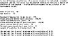

by Abraham Kandel
CRC Press, CRC Press LLC
ISBN: 084934297x Pub Date: 11/01/91
|
|
Fuzzy Expert Systems
by Abraham Kandel CRC Press, CRC Press LLC ISBN: 084934297x Pub Date: 11/01/91 |
| Previous | Table of Contents | Next |
The procedure in Section V. reduced the relevant parameters from 16 to 5. This information can then be utilized to design a prospective decision-making model to collect the required information. An important advantage of this method is that the information which has been inferred directly from the data can be combined with heuristic rules representing expert decision-making strategies. For example, the physician may wish to include rules of the form:
| IF | Reason for stopping ETT is severe chest pain |
| THEN | Artery blockage is probably severe |
| IF | Patient exercises less than 2 min |
| THEN | Artery blockage is severe |
A sample consultation run of the expert system is shown in Figure 2. Note that questions pertaining to parameters derived from the classification procedure are asked first. Then questions pertaining to heuristic rules are asked. All yes/no rules can be answered instead with a degree of presence between 0 and 10, inclusive. The results from all questioning is evaluated using approximate reasoning techniques for rule evaluation.48
| Number of diseased vessels | Cn(x) | BMDP | Training set | Size of sample | |
|---|---|---|---|---|---|
| 0 vs. 1 | 2 | 2 | 4 | 7 | 14 |
| 0 vs. 2 | 4 | 3 | 4 | 14 | 23 |
| 0 vs. 3 | 5 | 4 | 6 | 31 | 49 |
| 1 vs. 3 | 8 | 8 | 11 | 29 | 47 |
| Note: BMDP. | |||||
| Number of diseased vessels |  | Cn(x) |
|---|---|---|
| 0 vs. 1 | 175 | 103 |
| 0 vs. 2 | 84 | 76 |
| 0 vs. 3 | 118 | 188 |
| 1 vs. 3 | 123 | 82 |

Figure 2 Sample Consultation.
The pattern recognition system described is a useful method for the classification of diverse types of medical data. It has been shown to consistently produce more accurate results than standard techniques of statistical discriminant analysis. The system easily accommodates data of diverse types, including continuous data, crisp categorical data, as well as fuzzy data. Although the method has been illustrated in conjunction with a medical application, it is generally applicable to data in any field for which classification results are useful in the decision-making process.
The methodology has been applied successfully to a number of medical applications, including diagnosis of bacterial infections,39 determination of the extent of coronary artery disease,41,42 detection of liver and spleen disorders,45 analysis of chromatographic data,43,44 and analysis of survival rates for melanoma. In all these applications, the pattern classification algorithm has produced more accurate results than the standard method of nonlinear statistical discriminant analysis. The new Cohen multidimensional orthogonal polynomials provide straightforward classification for multivariate data, as well as flexible parameters for fine-tuning of the method to specific applications. The method determines importance of parameters, which results both in a reduction of the number of variables that must be collected and in a weighting of the relative importance of each parameter.
| Previous | Table of Contents | Next |
){kind=link}